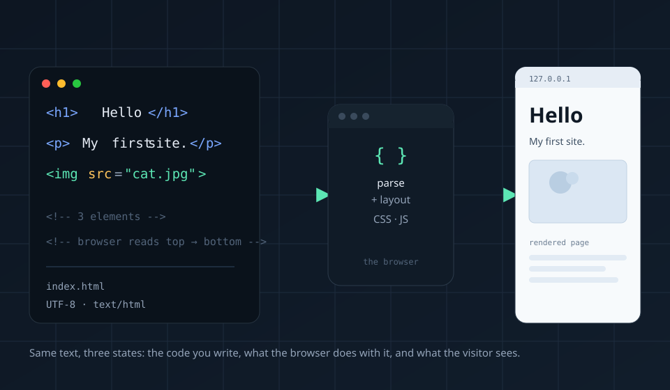

HTML notes: the skeleton of a page
This is my own summary after working through the HTML part of the course. Each section gives the rule first, then code I can copy, then the mistake I actually made while building this site.
What HTML is
HTML stands for HyperText Markup Language. It is not a programming language: it does not calculate and it does not decide anything. It does one job — it tells the browser what a piece of content is: a heading, a paragraph, a list item, or a link to another page.
The course separates three technologies, and this is how I remember them:
- HTML — structure: what is on the page
- CSS — style: what it looks like
- JavaScript — behaviour: how it reacts (not required for this task)
An element is usually a start tag, some content and an end tag:
<p>Hello</p>. Some elements have no content and no end tag —
<img>, <br>, <meta>.
A browser reads HTML from top to bottom and turns it into a page. It forgives most mistakes, but the result is not always what you meant — so tags are closed, and nesting is correct.
The document skeleton
Every HTML file starts from the same eight lines. After that, everything is added inside body.
<!DOCTYPE html> <html lang="en"> <head> <meta charset="UTF-8"> <meta name="viewport" content="width=device-width, initial-scale=1.0"> <title>Page title</title> <link rel="stylesheet" href="css/style.css"> </head> <body> <h1>Main heading</h1> <p>Content.</p> </body> </html>
Why the first file must be called index.html
When someone opens a site without naming a file, the server looks for a default document.
In practice that file is index.html — the front door. That is why my home page
is called that, and every other page is linked from it.
Mistake I made: leaving out <!DOCTYPE html>
Without that line the browser renders in quirks mode, where the box model and some default styles behave differently from the standard. Sizes that looked right in my head came out wrong on screen until the doctype was there.
Three things in the head
Nothing in head is visible, and yet the page fails without it.
| Line | Job | If it is missing |
|---|---|---|
<meta charset="UTF-8"> |
Tells the browser which character set to use | ä, ö, 中, € and ✓ turn into question marks or boxes |
<meta name="viewport" content="width=device-width, initial-scale=1.0"> |
Makes the page width equal the screen width | Phones zoom out and render the whole page tiny |
<title>…</title> |
The name of the page in the tab and in search results | The tab shows a file path, search results have no proper title |
A detail I only noticed later: the title should differ per page. This page is
“HTML notes — Tianze Tang”, the home page is “Tianze Tang — My GitHub website”.
Headings and paragraphs
There are six heading levels, h1 to h6. A page has
exactly one h1: it names the page. h2 are the big sections,
h3 the subsections inside them.
- Do not pick
h3because the text should be smaller — size belongs to CSS. - A heading is always followed by content, never by another heading.
- Do not skip levels:
h2straight toh4breaks the outline a screen reader reads aloud.
Paragraphs are <p>. Two paragraphs mean two p elements,
not one p with two <br> inside.
This is what an h2 looks like
This is the paragraph that follows it. The space between blocks comes from the stylesheet.
Here I have bold, italic, inline code and the abbreviation HTML.
<h2>This is what an h2 looks like</h2> <p>This is the paragraph that follows.</p> <p>Here I have <strong>bold</strong>, <em>italic</em> and <abbr title="HyperText Markup Language">HTML</abbr>.</p>
Elements, tags, attributes
Three words that look interchangeable and are not:
- element
- the whole thing: start tag + content + end tag —
<p>Hello</p> - tag
- the angle-bracket marker:
<p>and</p> - attribute
- extra information inside the start tag, as name="value":
href="about.html",alt="a diagram",class="card"
Values are always quoted. And when the same look is needed twice, it goes into a class
instead of being repeated as an inline style — that is what class is for.
Mistake I made: writing < directly into the text
To show a less-than sign on the page you must write <, otherwise the
browser thinks a tag is starting. Greater-than is >, ampersand is
&. Every code sample on this site is written that way — which is why
the source of this page looks doubled up.
Lists
Three kinds: unordered (ul), ordered (ol) and description (dl).
- HTML — structure
- CSS — style
- colour
- layout
- Write the skeleton
- Add content
- Write the CSS
- Check the links
ul- order does not matter
ol- order matters
A nested list goes inside the <li> it belongs to, never between two
li elements. I got this wrong first time and the second list escaped the first one.
Links and navigation
The “hyper” in hypertext is this one element: <a>. href is
where it goes, the content is what the visitor reads.
| Kind | Markup | Used for |
|---|---|---|
| Another page | <a href="about.html">About</a> | the navigation bar, “read more” links |
| Anchor on this page | <a href="#head">Jump</a> | the contents list, back to top |
| Another site | <a href="https://…" target="_blank" rel="noopener"> | references such as MDN |
Why the navigation bar is on every page
With six pages, a menu only on the home page means the visitor is trapped after one click.
So the same nav sits in the header of all six files, and exactly one
attribute changes: aria-current="page" on the current page.
<header class="site-header">
<nav class="wrap nav" aria-label="Main navigation">
<a class="brand" href="index.html">Tianze Tang</a>
<ul>
<li><a href="index.html">Home</a></li>
<li><a href="about.html">About</a></li>
<li><a href="html.html" aria-current="page">HTML notes</a></li>
<!-- and so on -->
</ul>
</nav>
</header>
Link text matters too. “Click here” tells the visitor nothing; “HTML notes” tells them exactly what happens next.
Images
An image needs two attributes: src (where the file is) and alt (what it shows).
<img src="images/figure-render.svg"
alt="Diagram: HTML code on the left, the browser
in the middle, the rendered page on the right">
<figure>
<img src="images/figure-render.svg" alt="…">
<figcaption>Figure 1: code, browser, page.</figcaption>
</figure>

- Paths are relative.
images/a.svgmeans “the images folder next to this HTML file”. - Size belongs in CSS. Not a pile of
width="800"attributes —width:100%in the stylesheet is easier to maintain. - alt is a sentence.
alt="image1"is worthless; describing what the picture explains is the point.
Semantic elements
A div can divide a page, but it carries no meaning. The semantic elements do the
same job and say what the region is, so a screen reader can jump straight to the navigation
or the main content.
| Element | What goes in it | Where on this site |
|---|---|---|
<header> | page header: logo and navigation | the bar on top of every page |
<nav> | a group of navigation links | the six page links |
<main> | the content of this page, only one | the body of every page |
<section> | a topic with its own heading | each numbered section of the notes |
<article> | content that makes sense on its own | the notes article as a whole |
<figure> | an image together with its caption | the diagram above |
<footer> | author, copyright, links | the bottom of every page |
Rules I keep
Structure first, style second
If the page makes sense with CSS turned off, the HTML is done.
One h1 per page
It names the page; everything else descends from it without skipping a level.
Semantic before div
header / nav / main / section / footer first,
divlast.Indent two spaces
Nesting is visible at a glance and edits do not get lost.
Click every link you add
With six pages, broken links are the first thing to break.
Always finish on a narrow window
Phone preview, then look for a horizontal scrollbar.
On to the CSS notes
Structure is done. Next is where the colour, the spacing and the layout of this site come from.